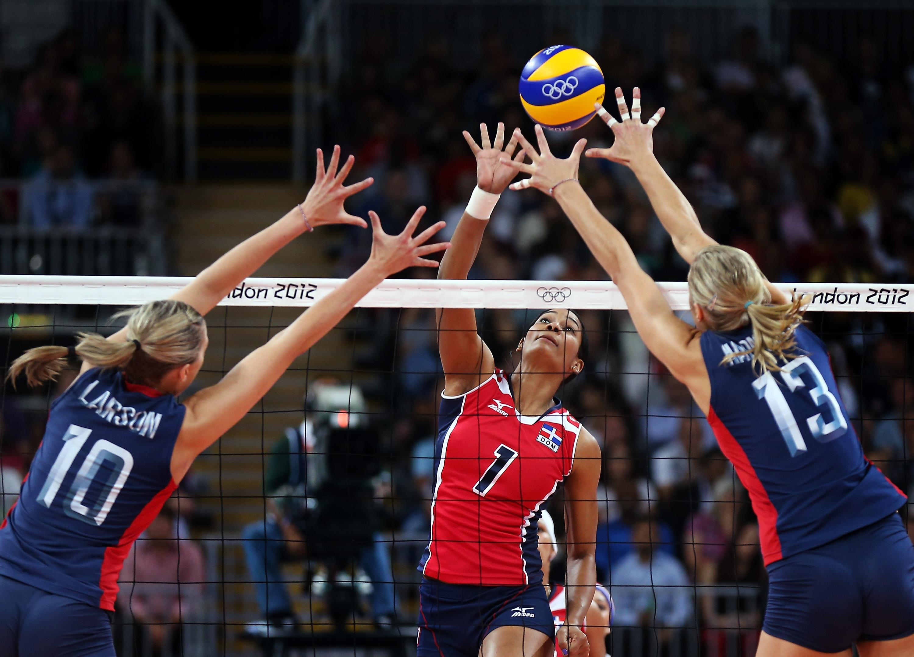
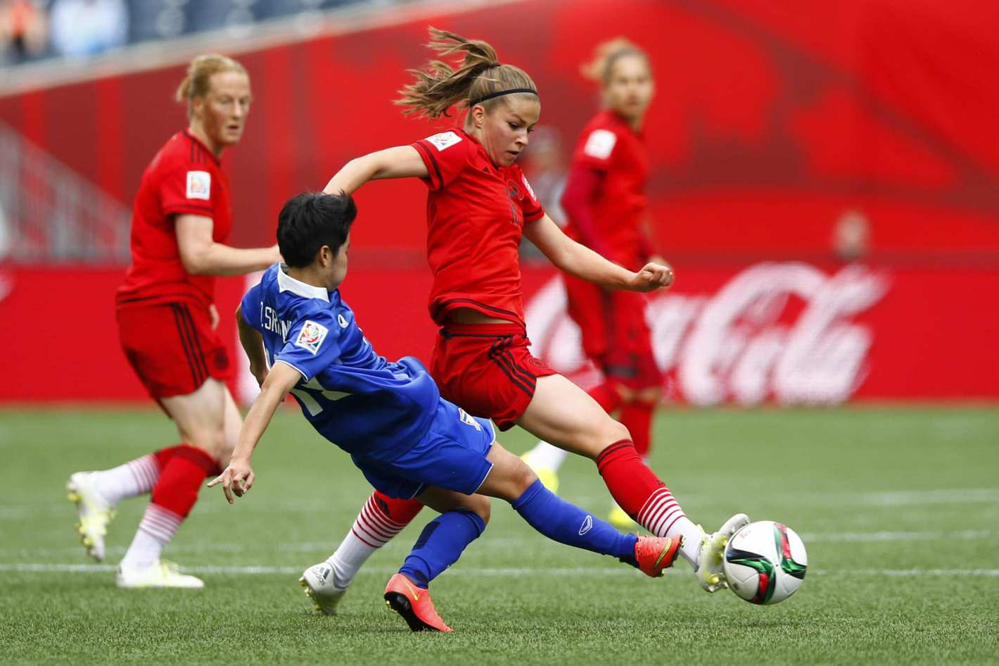
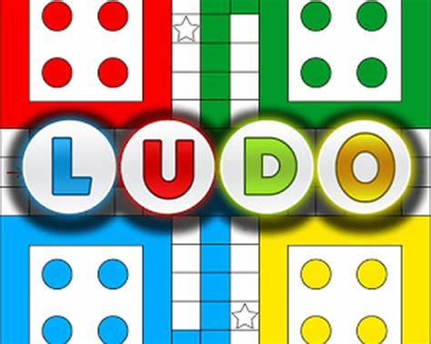

There are 2 types of games.
They are Outdoor And Indoor Games.
The Types Of Games Which Are Played Outside Is Known As outdoor Games.
Volleyball is a team sport in which two teams of six players are separated by a net. Each team tries to score points by grounding a ball on the other team's court under organized rules.
Basketball is a team sport in which two teams, most commonly of five players each, opposing one another on a rectangular court, compete with the primary objective of shooting a basketball (approximately 9.4 inches (24 cm) in diameter) through the defender's hoop (a basket 18 inches (46 cm) in diameter mounted 10 feet (3.048 m) high to a backboard at each end of the court), while preventing the opposing team from shooting through their own hoop.
Football is a kind of games played between two teams on a usually rectangular field having goalposts or goals at each end and whose object is to get the ball over a goal line, into a goal, or between goalposts by running, passing, or kicking. Football is a family of team sports that involve, to varying degrees, kicking a ball to score a goal. Unqualified, the word football normally means the form of football that is the most popular where the word is used.
The Types Of Games Which Are Played Inside The Room Or Inside Our Own House Is Known As Indoor Games.
Ludo is a strategy board game for two to four players, in which the players race their four tokens from start to finish according to the rolls of a single die. Like other cross and circle games, Ludo is derived from the Indian game Pachisi.
Scrabble is a word game in which two to four players score points by placing tiles, each bearing a single letter, onto a game board divided into a 15×15 grid of squares. The tiles must form words that, in crossword fashion, read left to right in rows or downward in columns and are included in a standard dictionary or lexicon.

Chess is a board game for two players, called White and Black, each controlling an army of chess pieces in their color, with the objective to checkmate the opponent's king.